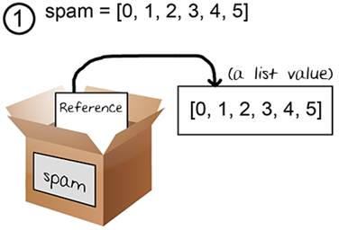
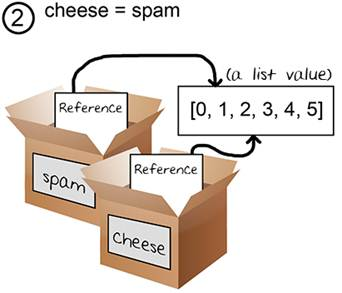
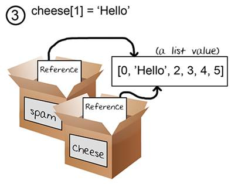
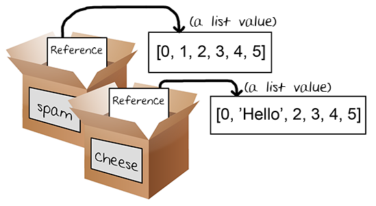

Topics Covered In This Chapter:
· The random.seed() function
· The random.randint() function
· List references
· The copy.deepcopy() Functions
· The random.shuffle() function
· Randomly scrambling a string
· The sys.exit() function
“It is poor civic hygiene to install technologies that could someday facilitate a police state.”
Bruce Schneier, cryptographer
We can try out the transposition encryption and decryption programs from the previous chapter by encrypting and decrypting a few messages with different keys. It seems to work pretty well. But does it always work?
You won’t know unless you test the encryptMessage() and decryptMessage() functions with different values for the message and key parameters. This would take a lot of time. You’ll have to type out a message in the encryption program, set the key, run the encryption program, paste the ciphertext into the decryption program, set the key, and then run the decryption program. And you’ll want to repeat that with several different keys and messages!
That’s a lot of boring work. Instead we can write a program to test the cipher programs for us. This new program can generate a random message and a random key. It will then encrypt the message with the encryptMessage() function from transpositionEncrypt.py and then pass the ciphertext from that to the decryptMessage() in transpositionDecrypt.py. If the plaintext returned by decryptMessage() is the same as the original message, the program can know that the encryption and decryption messages work. This is called automated testing.
There are several different message and key combinations to try, but it will only take the computer a minute or so to test thousands different combinations. If all of those tests pass, then we can be much more certain that our code works.
Open a new file editor window by clicking on File ► New Window. Type in the following code into the file editor, and then save it as transpositionTest.py. Press F5 to run the program. Note that first you will need to download the pyperclip.py module and place this file in the same directory as the transpositionTest.py file. You can download this file from http://invpy.com/pyperclip.py.
Source code for transpositionTest.py
1. # Transposition Cipher Test
2. # http://inventwithpython.com/hacking (BSD Licensed)
3.
4. import random, sys, transpositionEncrypt, transpositionDecrypt
5.
6. def main():
7. random.seed(42) # set the random "seed" to a static value
8.
9. for i in range(20): # run 20 tests
10. # Generate random messages to test.
11.
12. # The message will have a random length:
13. message = 'ABCDEFGHIJKLMNOPQRSTUVWXYZ' * random.randint(4, 40)
14.
15. # Convert the message string to a list to shuffle it.
16. message = list(message)
17. random.shuffle(message)
18. message = ''.join(message) # convert list to string
19.
20. print('Test #%s: "%s..."' % (i+1, message[:50]))
21.
22. # Check all possible keys for each message.
23. for key in range(1, len(message)):
24. encrypted = transpositionEncrypt.encryptMessage(key, message)
25. decrypted = transpositionDecrypt.decryptMessage(key, encrypted)
26.
27. # If the decryption doesn't match the original message, display
28. # an error message and quit.
29. if message != decrypted:
30. print('Mismatch with key %s and message %s.' % (key, message))
31. print(decrypted)
32. sys.exit()
33.
34. print('Transposition cipher test passed.')
35.
36.
37. # If transpositionTest.py is run (instead of imported as a module) call
38. # the main() function.
39. if __name__ == '__main__':
40. main()
When you run this program, the output will look like this:
Test #1: "KQDXSFQDBPMMRGXFKCGIQUGWFFLAJIJKFJGSYOSAWGYBGUNTQX..."
Test #2: "IDDXEEWUMWUJPJSZFJSGAOMFIOWWEYANRXISCJKXZRHMRNCFYW..."
Test #3: "DKAYRSAGSGCSIQWKGARQHAOZDLGKJISQVMDFGYXKCRMPCMQWJM..."
Test #4: "MZIBCOEXGRDTFXZKVNFQWQMWIROJAOKTWISTDWAHZRVIGXOLZA..."
Test #5: "TINIECNCBFKJBRDIUTNGDINHULYSVTGHBAWDQMZCNHZOTNYHSX..."
Test #6: "JZQIHCVNDWRDUFHZFXCIASYDSTGQATQOYLIHUFPKEXSOZXQGPP..."
Test #7: "BMKJUERFNGIDGWAPQMDZNHOQPLEOQDYCIIWRKPVEIPLAGZCJVN..."
Test #8: "IPASTGZSLPYCORCVEKWHOLOVUFPOMGQWZVJNYQIYVEOFLUWLMQ..."
Test #9: "AHRYJAPTACZQNNFOTONMIPYECOORDGEYESYFHROZDASFIPKSOP..."
Test #10: "FSXAAPLSQHSFUPQZGTIXXDLDMOIVMWFGHPBPJROOSEGPEVRXSX..."
Test #11: "IVBCXBIHLWPTDHGEGANBGXWQZMVXQPNJZQPKMRUMPLLXPAFITN..."
Test #12: "LLNSYMNRXZVYNPRTVNIBFRSUGIWUJREMPZVCMJATMLAMCEEHNW..."
Test #13: "IMWRUJJHRWAABHYIHGNPSJUOVKRRKBSJKDHOBDLOUJDGXIVDME..."
Test #14: "IZVXWHTIGKGHKJGGWMOBAKTWZWJPHGNEQPINYZIBERJPUNWJMX..."
Test #15: "BQGFNMGQCIBOTRHZZOBHZFJZVSRTVHIUJFOWRFBNWKRNHGOHEQ..."
Test #16: "LNKGKSYIPHMCDVKDLNDVFCIFGEWQGUJYJICUYIVXARMUCBNUWM..."
Test #17: "WGNRHKIQZMOPBQTCRYPSEPWHLRDXZMJOUTJCLECKEZZRRMQRNI..."
Test #18: "PPVTELDHJRZFPBNMJRLAZWRXRQVKHUUMRPNFKXJCUKFOXAGEHM..."
Test #19: "UXUIGAYKGLYUQTFBWQUTFNSOPEGMIWMQYEZAVCALGOHUXJZPTY..."
Test #20: "JSYTDGLVLBCVVSITPTQPHBCYIZHKFOFMBWOZNFKCADHDKPJSJA..."
Transposition cipher test passed.
Our testing program works by importing the transpositionEncrypt.py and transpositionDecrypt.py programs as modules. This way, we can call the encryptMessage() and decryptMessage() functions in these programs. Our testing program will create a random message and choose a random key. It doesn’t matter that the message is just random letters, we just need to check that encrypting and then decrypting the message will result in the original message.
Our program will repeat this test twenty times by putting this code in a loop. If at any point the returned string from transpositionDecrypt() is not the exact same as the original message, our program will print an error message and exit.
transpositionTest.py
1. # Transposition Cipher Test
2. # http://inventwithpython.com/hacking (BSD Licensed)
3.
4. import random, sys, transpositionEncrypt, transpositionDecrypt
5.
6. def main():
First our program imports two modules that come with Python, random and sys. We also want to import the transposition cipher programs we’ve written: transpositionEncrypt.py and transpositionDecrypt.py. Note that we don’t put the .py extension in our import statement.
transpositionTest.py
7. random.seed(42) # set the random "seed" to a static value
Technically, the numbers produced by Python’s random.randint() function are not really random. They are produced from a pseudorandom number generator algorithm, and this algorithm is well known and the numbers it produces are predictable. We call these random-looking (but predictable) numbers pseudorandom numbers because they are not truly random.
The pseudorandom number generator algorithm starts with an initial number called the seed. All of the random numbers produced from a seed are predictable. You can reset Python’s random seed by calling the random.seed() function. Type the following into the interactive shell:
>>> import random
>>> random.seed(42)
>>> for i in range(5):
... print(random.randint(1, 10))
...
7
1
3
3
8
>>> random.seed(42)
>>> for i in range(5):
... print(random.randint(1, 10))
...
7
1
3
3
8
>>>
When the seed for Python’s pseudorandom number generator is set to 42, the first “random” number between 1 and 10 will always be 7. The second “random” number will always be 1, and the third number will always be 3, and so on. When we reset the seed back to 42 again, the same set of pseudorandom numbers will be returned from random.randint().
Setting the random seed by calling random.seed() will be useful for our testing program, because we want predictable numbers so that the same pseudorandom messages and keys are chosen each time we run the automated testing program. Our Python programs only seem to generate “unpredictable” random numbers because the seed is set to the computer’s current clock time (specifically, the number of seconds since January 1st, 1970) when the random module is first imported.
It is important to note that not using truly random numbers is a common security flaw of encryption software. If the “random” numbers in your programs can be predicted, then this can provide a cryptanalyst with a useful hint to breaking your cipher. More information about generating truly random numbers with Python using the os.urandom() function can be found at http://invpy.com/random.
transpositionTest.py
9. for i in range(20): # run 20 tests
10. # Generate random messages to test.
11.
12. # The message will have a random length:
13. message = 'ABCDEFGHIJKLMNOPQRSTUVWXYZ' * random.randint(4, 40)
The code that does a single test will be in this for loop’s block. We want this program to run multiple tests since the more tests we try, the more certain that we know our programs work.
Line 13 creates a random message from the uppercase letters and stores it in the message
variable. Line 13 uses string replication to create messages of different lengths. The random.randint() function takes two integer arguments and returns a random integer between those two integers (including the integers themselves). Type the following into the interactive shell:
>>> import random
>>> random.randint(1, 20)
20
>>> random.randint(1, 20)
18
>>> random.randint(1, 20)
3
>>> random.randint(1, 20)
18
>>> random.randint(100, 200)
107
>>>
Of course, since these are pseudorandom numbers, the numbers you get will probably be different than the ones above. Line 13 creates a random message from the uppercase letters and stores it in the message variable. Line 13 uses string replication to create messages of different lengths.
Technically, variables do not store list values in them. Instead, they store reference values to list values. Up until now the difference hasn’t been important. But storing list references instead of lists becomes important if you copy a variable with a list reference to another variable. Try entering the following into the shell:
>>> spam = 42
>>> cheese = spam
>>> spam = 100
>>> spam
100
>>> cheese
42
>>>
This makes sense from what we know so far. We assign 42 to the spam variable, and then we copy the value in spam and assign it to the variable cheese. When we later change the value in spam to 100, this doesn’t affect the value in cheese. This is because spam and cheese are different variables that each store their own values.
But lists don’t work this way. When you assign a list to a variable with the = sign, you are actually assigning a list reference to the variable. A reference is a value that points to some bit of data, and a list reference is a value that points to a list. Here is some code that will make this easier to understand. Type this into the shell:
>>> spam = [0, 1, 2, 3, 4, 5]
>>> cheese = spam
>>> cheese[1] = 'Hello!'
>>> spam
[0, 'Hello!', 2, 3, 4, 5]
>>> cheese
[0, 'Hello!', 2, 3, 4, 5]
This looks odd. The code only changed the cheese list, but it seems that both the cheese and spam lists have changed.
Notice that the line cheese = spam copies the list reference in spam to cheese, instead of copying the list value itself. This is because the value stored in the spam variable is a list reference, and not the list value itself. This means that the values stored in both spam and cheese refer to the same list. There is only one list because the list was not copied, the reference to the list was copied. So when you modify cheese in the cheese[1] = 'Hello!' line, you are modifying the same list that spam refers to. This is why spam seems to have the same list value that cheese does.
Remember that variables are like boxes that contain values. List variables don’t actually contain lists at all, they contain references to lists. Here are some pictures that explain what happens in the code you just typed in:

Figure 10-1. Variables do not store lists, but rather references to lists.
On the first line, the actual list is not contained in the spam variable but a reference to the list. The list itself is not stored in any variable.

Figure 10-2. Two variables store two references to the same list.
When you assign the reference in spam to cheese, the cheese variable contains a copy of the reference in spam. Now both cheese and spam refer to the same list.

Figure 10-3. Changing the list changes all variables with references to that list.
When you alter the list that cheese refers to, the list that spam refers to is also changed because they refer to the same list. If you want spam and cheese to store two different lists, you have to create two different lists instead of copying a reference:
>>> spam = [0, 1, 2, 3, 4, 5]
>>> cheese = [0, 1, 2, 3, 4, 5]
In the above example, spam and cheese have two different lists stored in them (even though these lists are identical in content). Now if you modify one of the lists, it will not affect the other because spam and cheese have references to two different lists:
>>> spam = [0, 1, 2, 3, 4, 5]
>>> cheese = [0, 1, 2, 3, 4, 5]
>>> cheese[1] = 'Hello!'
>>> spam
[0, 1, 2, 3, 4, 5]
>>> cheese
[0, 'Hello!', 2, 3, 4, 5]
Figure 10-4 shows how the two references point to two different lists:

Figure 10-4. Two variables each storing references to two different lists.
As we saw in the previous example, the following code only copies the reference value, not the list value itself:
>>> spam = [0, 1, 2, 3, 4, 5]
>>> cheese = spam # copies the reference, not the list
If we want to copy the list value itself, we can import the copy module to call the copy.deepcopy() function, which will return a separate copy of the list it is passed:
>>> spam = [0, 1, 2, 3, 4, 5]
>>> import copy
>>> cheese = copy.deepcopy(spam)
>>> cheese[1] = 'Hello!'
>>> spam
[0, 1, 2, 3, 4, 5]
>>> cheese
[0, 'Hello!', 2, 3, 4, 5]
>>>
The copy.deepcopy() function isn’t used in this chapter’s program, but it is helpful when you need to make a duplicate list value to store in a different variable.
Practice exercises can be found at http://invpy.com/hackingpractice10A.
The random.shuffle() function is also in the random module. It accepts a list argument, and then randomly rearranges items in the list. Type the following into the interactive shell:
>>> import random
>>> spam = [0, 1, 2, 3, 4, 5, 6, 7, 8, 9]
>>> spam
[0, 1, 2, 3, 4, 5, 6, 7, 8, 9]
>>> random.shuffle(spam)
>>> spam
[3, 0, 5, 9, 6, 8, 2, 4, 1, 7]
>>> random.shuffle(spam)
>>> spam
[1, 2, 5, 9, 4, 7, 0, 3, 6, 8]
>>>
An important thing to note is that shuffle() does not return a list value. Instead, it changes the list value that is passed to it (because shuffle() modifies the list directly from the list reference value it is passed.) We say that the shuffle() function modifies the list in-place. This is why we only need to execute random.shuffle(spam) instead of spam = random.shuffle(spam).
Remember that you can use the list() function to convert a string or range object to a list value. Type the following into the interactive shell:
>>> import random
>>> eggs = list('Hello')
>>> eggs
['H', 'e', 'l', 'l', 'o']
>>> random.shuffle(eggs)
>>> eggs
['o', 'H', 'l', 'l', 'e']
>>>
And also remember you can use the join() string method to pass a list of strings and return a single string:
>>> eggs
['o', 'H', 'l', 'l', 'e']
>>> eggs = ''.join(eggs)
>>> eggs
'oHlle'
>>>
transpositionTest.py
15. # Convert the message string to a list to shuffle it.
16. message = list(message)
17. random.shuffle(message)
18. message = ''.join(message) # convert list to string
In order to shuffle the characters in a string value, first we convert the string to a list with list(), then shuffle the items in the list with shuffle(), and then convert back to string value with the join() string method. Try typing the following into the interactive shell:
>>> import random
>>> spam = 'Hello world!'
>>> spam = list(spam)
>>> random.shuffle(spam)
>>> spam = ''.join(spam)
>>> spam
'wl delHo!orl'
>>>
We use this technique to scramble the letters in the message variable. This way we can test many different messages just in case our transposition cipher can encrypt and decrypt some messages but not others.
transpositionTest.py
20. print('Test #%s: "%s..."' % (i+1, message[:50]))
Line 20 has a print() call that displays which test number we are on (we add one to i because i starts at 0 and we want the test numbers to start at 1). Since the string in message can be very long, we use string slicing to show only the first 50 characters of message.
Line 20 uses string interpolation. The value that i+1 evaluates to will replace the first %s in the string and the value that message[:50] evaluates to will replace the second %s. When using string interpolation, be sure the number of %s in the string matches the number of values that are in between the parentheses after it.
transpositionTest.py
22. # Check all possible keys for each message.
23. for key in range(1, len(message)):
While the key for the Caesar cipher could be an integer from 0 to 25, the key for the transposition cipher can be between 1 and the length of the message. We want to test every possible key for the test message, so the for loop on line 23 will run the test code with the keys 1 up to (but not including) the length of the message.
transpositionTest.py
24. encrypted = transpositionEncrypt.encryptMessage(key, message)
25. decrypted = transpositionDecrypt.decryptMessage(key, encrypted)
Line 24 encrypts the string in message using our encryptMessage() function. Since this function is inside the transpositionEncrypt.py file, we need to add transpositionEncrypt. (with the period at the end) to the front of the function name.
The encrypted string that is returned from encryptMessage() is then passed to decryptMessage(). We use the same key for both function calls. The return value from decryptMessage() is stored in a variable named decrypted. If the functions worked, then the string in message should be the exact same as the string in decrypted.
transpositionTest.py
27. # If the decryption doesn't match the original message, display
28. # an error message and quit.
29. if message != decrypted:
30. print('Mismatch with key %s and message %s.' % (key, message))
31. print(decrypted)
32. sys.exit()
33.
34. print('Transposition cipher test passed.')
Line 29 tests if message and decrypted are equal. If they aren’t, we want to display an error message on the screen. We print the key, message, and decrypted values. This information could help us figure out what happened. Then we will exit the program.
Normally our programs exit once the execution reaches the very bottom and there are no more lines to execute. However, we can make the program exit sooner than that by calling the sys.exit() function. When sys.exit() is called, the program will immediately end.
But if the values in message and decrypted are equal to each other, the program execution skips the if statement’s block and the call to sys.exit(). The next line is on line 34, but you can see from its indentation that it is the first line after line 9’s for loop.
This means that after line 29’s if statement’s block, the program execution will jump back to line 23’s for loop for the next iteration of that loop. If it has finished looping, then instead the execution jumps back to line 9’s for loop for the next iteration of that loop. And if it has finished looping for that loop, then it continues on to line 34 to print out the string 'Transposition cipher test passed.'.
transpositionTest.py
37. # If transpositionTest.py is run (instead of imported as a module) call
38. # the main() function.
39. if __name__ == '__main__':
40. main()
Here we do the trick of checking if the special variable __name__ is set to '__main__' and if so, calling the main() function. This way, if another program imports transpositionTest.py, the code inside main() will not be executed but the def statements that create the main() function will be.
We’ve written a test program that tests our encryption programs, but how do we know that the test program works? What if there is a bug with our test program, and it is just saying that our transposition cipher programs work when they really don’t?
We can test our test program by purposefully adding bugs to our encryption or decryption functions. Then when we run the test program, if it does not detect a problem with our cipher program, then we know that the test program is not correctly testing our cipher programs.
Change transpositionEncrypt.py’s line 36 from this:
transpositionEncrypt.py
35. # move pointer over
36. pointer += key
…to this:
transpositionEncrypt.py
35. # move pointer over
36. pointer += key + 1
Now that the encryption code is broken, when we run the test program it should give us an error:
Test #1: "JEQLDFKJZWALCOYACUPLTRRMLWHOBXQNEAWSLGWAGQQSRSIUIQ..."
Mismatch with key 1 and message JEQLDFKJZWALCOYACUPLTRRMLWHOBXQNEAWSLGWAGQQSRSIUIQTRGJHDVCZECRESZJARAVIPFOBWZXXTBFOFHVSIGBWIBBHGKUWHEUUDYONYTZVKNVVTYZPDDMIDKBHTYJAHBNDVJUZDCEMFMLUXEONCZXWAWGXZSFTMJNLJOKKIJXLWAPCQNYCIQOFTEAUHRJODKLGRIZSJBXQPBMQPPFGMVUZHKFWPGNMRYXROMSCEEXLUSCFHNELYPYKCNYTOUQGBFSRDDMVIGXNYPHVPQISTATKVKM.
JQDKZACYCPTRLHBQEWLWGQRIITGHVZCEZAAIFBZXBOHSGWBHKWEUYNTVNVYPDIKHYABDJZCMMUENZWWXSTJLOKJLACNCQFEUROKGISBQBQPGVZKWGMYRMCELSFNLPKNTUGFRDVGNPVQSAKK
We can use our programming skills for more than just writing programs. We can also program the computer to test those programs to make sure they work for different inputs. It is a common practice to write code to test code.
This chapter covered a few new functions such as the random.randint() function for producing pseudorandom numbers. Remember, pseudorandom numbers aren’t random enough for cryptography programs, but they are good enough for this chapter’s testing program. The random.shuffle() function is useful for scrambling the order of items in a list value.
The copy.deepcopy() function will create copies of list values instead of reference values. The difference between a list and list reference is explained in this chapter as well.
All of our programs so far have only encrypted short messages. In the next chapter, we will learn how to encrypt and decrypt entire files on your hard drive.